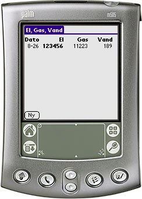

Every month I record the current state of my electricity, gas and water meters. Normally I record them on a web page on my website. But then I got the striking idea of hacking this little program.
It really doesn't do anything useful. Yet. I plan to be able to export the data to csv for later manipulation in Excel or OpenOffice Spreadsheet.
But that is the future .... :-)
El, Gas, Vand was made for danish meters. However, the program has been translated to english.
You can support this project by donating any amount to my Pay Pal account.
Changelog:
v2.2 (2005-12-09) The database now gets sorted after a HotSync. v2.1 (2005-12-08) Added simple statistics module. v2.0 (2005-12-07) Reworked the interface. v1.0 (2005-08-26) First public release of this toy product.